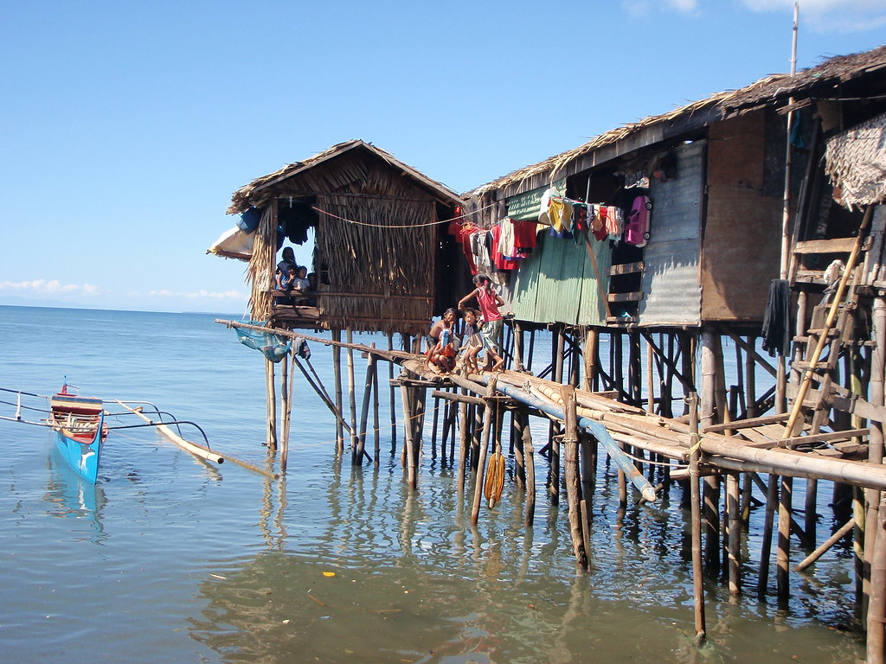
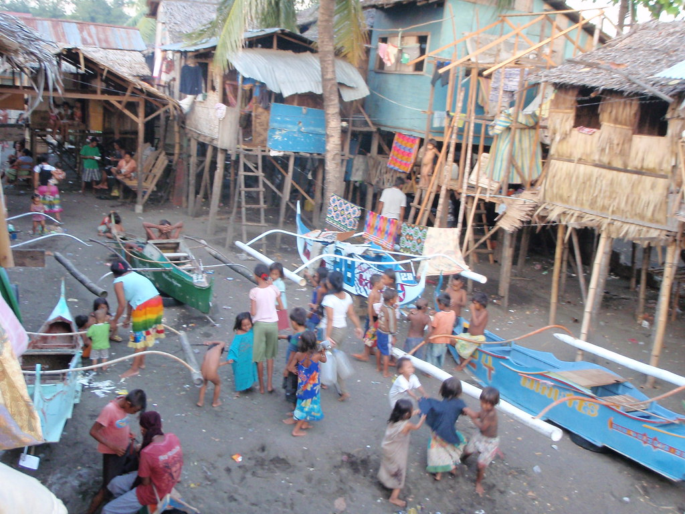

Click here to go back!
Project Summmary

The project will target 70 people, more is accepted as well. The total budget of the project is 25,000 and 20% of the budget will be contributed by the community.
The project was started to support our focused issue with our Partner Institution. One of the top most problems affecting the community is the unstable/broken down property and
visible unsanitary restrooms.Employees/workers and residents are uncomfortable with the idea of having to use a room that is made for comfort to be unsanitary and unsafe for
health. The other obvious challenge is that it may disrupt their work flow and may lead to some leaving the Institution.
Project Significance

This project is very important because the people in The Badjao Community and our Partner Institution do not have a proper sanitary area where they can do their own private business.
They also don’t have enough funds to have this built, so we are pushing this project to help them gain funds and be able to rebuild their unstable restrooms, as well as be able to
provide supplies to help clean up. They have a community filled with families and children who don't have the knowledge of proper sanitary practices.
This project is very important because the people in The Badjao Community and our Partner Institution do not have a proper sanitary area where they can do their own private business.
They also don’t have enough funds to have this built, so we are pushing this project to help them gain funds and be able to rebuild their unstable restrooms, as well as be able to
provide supplies to help clean up. They have a community filled with families and children who don't have the knowledge of proper sanitary practices. This project will teach them
how to clean up environments and themselves properly after using the comfort room and how to maintain the cleanliness, to be able to prevent bacteria and germs that can cause
illnesses. This project will further explain to the people of this community the importance of having clean sanitation areas to their overall health as poor sanitation will lead
to diarrhoeal diseases such as cholera, dysentery, typhoid, intestinal worm infections and polio. The collected funds from donors and activities are then to be used for the construction
of sanitary areas and sanitary materials for everyone.
About The Designer
 Chuck Amparo is a web designer assigned Project summary and Project significance. He is responsible for displaying important information about the background of the project. He designs the 3rd website (background), which displays the plan, the budget, the importance, the results and the mission. He is a 15 years old male currently studying at the Ateneo de Davao Junior High School. His mission is to ensure that every online viewer of our website is up to date with the ongoings of the project.
Chuck Amparo is a web designer assigned Project summary and Project significance. He is responsible for displaying important information about the background of the project. He designs the 3rd website (background), which displays the plan, the budget, the importance, the results and the mission. He is a 15 years old male currently studying at the Ateneo de Davao Junior High School. His mission is to ensure that every online viewer of our website is up to date with the ongoings of the project.